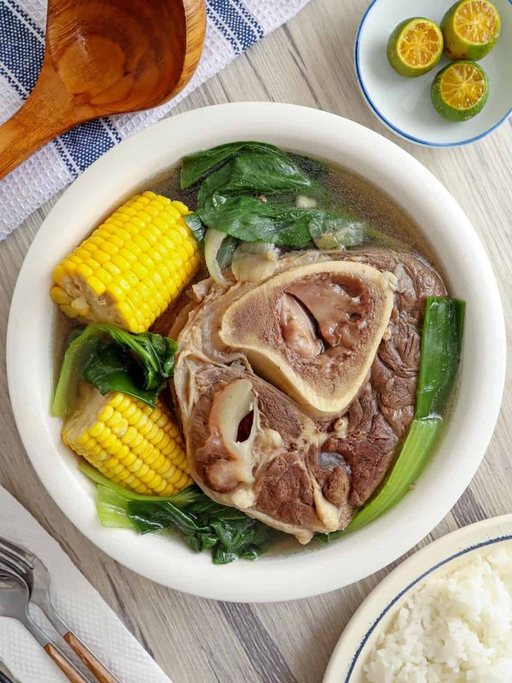
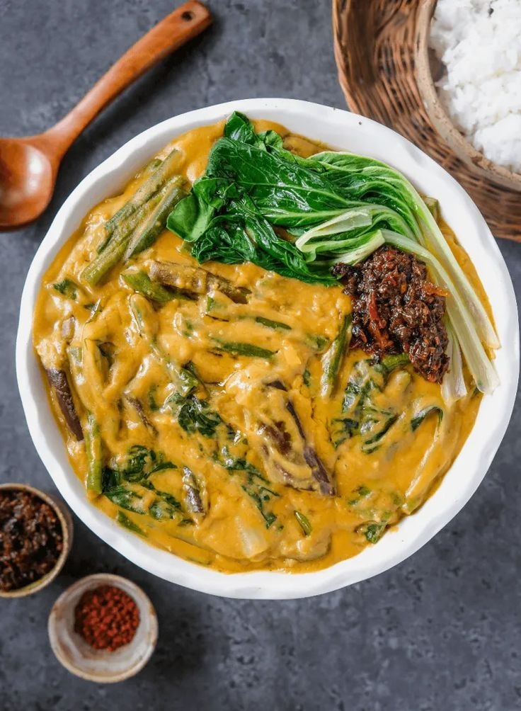
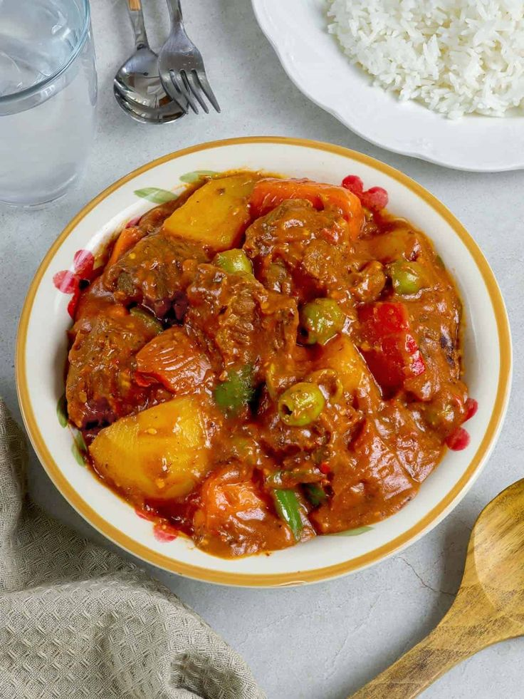

Lasang Pinoy: A Guide to Traditional Filipino Recipes
Adobo
▶
Adobo is a dish that is usually made with chicken and pork. Tastes like a bold, savory-salty and sour stew, often with a hint of sweetness. It is widely considered to be the unofficial national dish of the Philippines, and it is known for its long shelf life due to the preservative qualities of vinegar.
Ingredients:
1 ½ lb. chicken or pork (cubed)
1 ½ teaspoons whole peppercorn (pamintang buo)
5 to 6 pieces dried bay leaves (dahon ng laurel)
6 to 8 cloves garlic (crushed)
5 tablespoons soy sauce
3 tablespoons coconut vinegar
1 ½ cup water or beef broth
3 tablespoons cooking oil
Salt to taste (optional)
Instructions:
In a bowl, combine chicken or pork with soy sauce, crushed garlic, and bay leaves. Mix well and marinate for at least 30 minutes.
Heat cooking oil in a pan over medium heat. Add the marinated meat (reserve the marinade) and sauté until lightly browned.
Pour in the reserved marinade, vinegar, and water or broth. Do not stir immediately after adding the vinegar. Allow it to boil for a few minutes.
Lower the heat and simmer for about 30–40 minutes, or until the meat becomes tender and the sauce slightly thickens.
Add whole peppercorns and salt to taste. Continue to simmer until the sauce reaches your desired consistency.
Transfer to a serving dish and serve hot with steamed rice.
Sinigang
▶
Sinigang, sometimes anglicized as sour broth, is a Filipino soup or stew characterized by its sour and savory taste. This recipe uses pork as the main ingredient. Other proteins and seafood can also be used. Beef, shrimp, fish are commonly used to cook sinigang.
Ingredients:
2 lbs. pork belly
1 bunch water spinach (chopped)
8 pieces string beans (cut into 2-inch pieces)
2 pieces eggplants (sliced)
1 piece daikon radish
8 pieces okras
2 pieces tomatoes (sliced into wedges)
2 pieces long green pepper
1 piece onion (sliced into wedges)
2 quarts water
Fish sauce and ground black pepper (to taste)
Instructions:
In a large pot, pour in 2 quarts of water and bring to a boil. Add the pork belly and simmer until tender. Skim off any scum that rises to the surface.
Add the onion, tomatoes, and long green peppers. Simmer for a few minutes to allow the flavors to blend.
Put in the daikon radish, eggplant, okra, and string beans. Continue to cook until the vegetables are tender.
Add fish sauce and ground black pepper to taste. Adjust the seasoning according to preference.
Add the chopped water spinach and cook for another 1–2 minutes.
Transfer to a serving bowl and serve immediately with steamed rice.
Bulalo
▶

Bulalo is a traditional Filipino beef soup made from shank and bone marrow slow-cooked until tender. It is known for its rich, savory broth and melt-in-your-mouth meat. This comforting dish is often enjoyed hot and served with steamed rice or fish sauce on the side for added flavor.
Ingredients:
2 lbs beef shank
½ cabbage (whole leaf individually detached)
1 bundle bok choy
2 cobs corn (each cut into 3 parts)
2 Tablespoons whole peppercorn
1/2 cup green onions (cut unto 1 1/2 inch pieces)
1 onion
34 ounces water
fish sauce to taste (optional)
Instructions:
In a large pot, pour in the water and bring to a boil. Add the beef shank and simmer over low heat. Skim off any scum that rises to the surface.
Add the whole onion and peppercorns to the pot. Continue to simmer until the meat becomes tender and the broth develops a rich flavor.
Put in the corn pieces and cook until they are tender and slightly sweet.
Add the cabbage and bok choy. Continue to cook for a few minutes or until the vegetables are just tender.
Add fish sauce according to taste. You may also adjust the seasoning with salt if desired.
Add the green onions before removing from heat. Serve hot with steamed rice and a side of fish sauce with calamansi or chili for added flavor.
Kare-kare
▶

Kare-Kare is a traditional Filipino stew made with oxtail, vegetables, and a thick peanut-based sauce. It is known for its rich, creamy texture and mild, nutty flavor. The dish is often served with bagoong (shrimp paste) on the side, which adds a savory contrast to the sweetness of the peanut sauce.
Ingredients:
3 lbs oxtail (cut in 2 inch slices you an also use tripe or beef slices)
1 piece small banana flower bud (sliced)
1 bundle pechay or bok choy
1 bundle string beans (cut into 2 inch slices)
4 pieces eggplants (sliced)
1 cup ground peanuts
1/2 cup peanut butter
1/2 cup shrimp paste
34 Ounces water (about 1 Liter)
1/2 cup annatto seeds (soaked in a cup of water)
1/2 cup toasted ground rice
1 tbsp garlic (minced)
1 piece onion (chopped)
salt and pepper
Instructions:
In a large pot, pour in the water and bring to a boil. Add the oxtail and simmer until tender. Skim off any scum that rises to the surface.
Soak the annatto seeds in a cup of warm water until the color is extracted. Strain and set the colored water aside.
In a separate pan, heat oil and sauté the garlic and onion until fragrant and translucent.
Transfer the tender oxtail into the sautéed mixture. Pour in the annatto water and stir to mix evenly.
Combine the ground peanuts, peanut butter, and toasted ground rice with some broth from the boiled meat. Stir until well blended, then pour into the pot. Simmer until the sauce thickens.
Put in the eggplants, banana flower, string beans, and pechay. Continue to cook until the vegetables are tender.
Season with salt and pepper to taste. Serve hot with steamed rice and shrimp paste (bagoong) on the side.
Kaldereta
▶

Kaldereta is a traditional Filipino stew made with pork slowly cooked in a flavorful tomato-based sauce. It is known for its rich, savory taste and smooth, hearty texture. It is flavored with liver spread, which gives the dish its distinct creamy texture and savory depth. Often enjoyed on special occasions.
Ingredients:
2 lbs. Pork (sliced into cubes)
1 piece Knorr Pork cube
8 oz. tomato sauce
¾ cup green olives
1 piece red bell pepper (sliced)
1 piece green bell pepper (sliced)
2 pieces potatoes (cubed)
2 pieces carrot (sliced)
1 piece onion (chopped)
3 cloves garlic (chopped)
1 1/2 cups water
½ cup liver spread
3 tablespoons cooking oil
Salt and ground black pepper to taste
Instructions:
Heat cooking oil in a pan over medium heat. Sauté the garlic and onion until fragrant and translucent.
Add the pork cubes and cook until lightly browned on all sides.
Pour in the tomato sauce and water. Add the Knorr Pork cube and stir well. Bring to a boil.
Lower the heat and simmer for 40–60 minutes, or until the pork becomes tender and the sauce begins to thicken. Add more water if necessary.
Put in the potatoes and carrots. Continue to cook until they are almost tender.
Stir in the liver spread and mix until well combined, allowing the sauce to become rich and creamy.
Add the bell peppers and olives. Add the red and green bell peppers along with the green olives. Cook for another 3–5 minutes.
Add salt and ground black pepper as desired.
Transfer to a serving dish and serve hot with steamed rice.